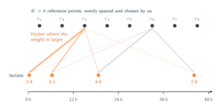
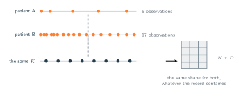
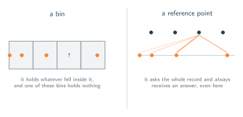

11 · Attention Over Time
Queries You Choose
A query does not have to come from the data.
The mechanism from section 10 answers a question of the form what was channel $d$ doing at time $t$, and it will answer for any $t$ we care. This flexibility introduces a shift in how the model processes information. Traditional architectures always derive their queries directly from the input sequence. Those systems generate one query per token or window, which allows the raw data to dictate the exact volume of questions. The new multi-time attention mechanism reverses this dynamic. The historical record now supplies only the keys and values while we independently define all structural queries.
This separation requires us to explicitly choose which timestamps to investigate. Neural networks fundamentally cannot process a continuous function of $t$. Typical architectural components such as linear layers, recurrent networks, and attention blocks all demand a specific, predefined quantity of discrete vectors. We currently possess a continuous rule that yields a value for any arbitrary time we specify. We therefore must transform this open-ended rule into a finite data structure before passing it to any downstream computational blocks.
Reference Points
To discretize the output, we must establish a fixed set of target evaluation times. We define this discrete sequence as our reference points,
and query the mechanism at each designated timestemp. This procedure exctracts $K$ discrete values for a single clinical channel. Processing all $D$ channels simultaneously yields a comprehensive $K \times D$ matrix where the individual entry at row $k$ and column $d$ corresponds to the interpolated result.
which is the equation from section 10 with $t$ set to $r_k$. Nothing about the mechanism has changed. We have simply decided where to point it.

Ragged In, Rectangular Out
This is the step that makes the rest of a model possible. The input was three lists of different lengths with no shared timestamps, and the output is a $K \times D$ array. Its shape depends on $K$ and $D$ alone, that is, on how many questions we decided to ask ($K$) and how many channels the patient has ($D$). It does not depend on $L_d$, so a patient with 2000 pulse readings and a patient with 30 produce arrays of exactly the same size.

Note also what this array is not. It is not a summary of the record at $K$ resolutions, and it is not the record resampled. Each of its $K \times D$ entries was computed from every observation in its channel, weighted by a kernel the model learned. Reference point $r_3$ and reference point $r_7$ read the same four lactate measurements as each other, they differ only in how much attention they pay to each one.
A Reference Point Is Not a Bin
While this technique visually resembles the binning strategy from section 08, the underlying mechaniscs are completely different. Both methods apply a structured grid to irregular data, but their information flow operates in reverse. The figure illutrates this contrast clearly. A traditional bin is a passive container that only registers data falling explicitly within its boundaries. An empty bin requires the system to artificially invent data using techniques like forward filling. Conversely, the figure shows that a reference point is an active query mechanism. It does not wait to filled but instead actively reaches out across the entire patient record to evaluate surrounding data. Therefore, a reference point always computes a valid interpolated answer on actual nearby measurements rather than relying on fabricated placeholders.

The consequence is that no entry of the array is ever missing, and no entry was ever fabricated. Every one of them is a weighted average of numbers a clinician actually recorded. Where the record is dense the weights concentrate on a handful of nearby readings; where it is sparse they spread across whatever exists. In neither case does anything get written down that nobody measured.
Choosing $K$ and Where to Put Them
Two structural decisions remain entirely up to us.
- The value of $K$: This parameter establishes the resolution of the final output and determines the computational cost because every reference point must be evaluated against every recorded observation.
- The placement of the reference points: The standard approach applies an evenly spaced grid across the entire observation window as shown in the previous figures. A practical alternative aligns the reference points with the exact timestamps of actual measurements across any channel so that the model naturally adapts to the clinical record instead of imposing a rigid structure onto it.
Both of these selections act as standard hyperparameters that can be tuned on a validation set. They are fundamentally different from the forced compromises required by the methods in section 08. Choosing a suboptimal value for $K$ simply reduces resolution or increases computation time. It will not artificially invent clinical measurements and it will not degrade the integrity of one channel just to accommodate another.